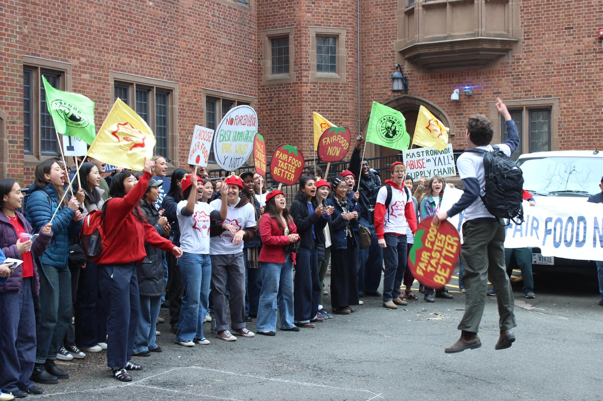
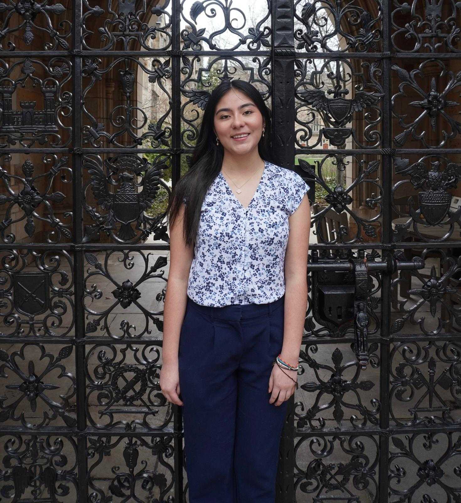
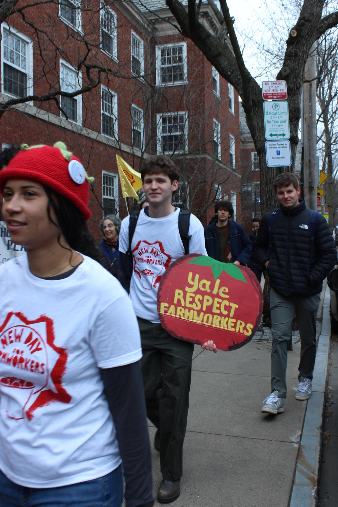

running for Yale to respect us. all of us.
Every year, YCC candidates promise the same things. Every year, administrators nod politely and change nothing. The strongly-worded emails aren't working. It's time to actually do something about it.

Dwight Hall Advocacy Coordinator. Student organizer with the Endowment Justice Collective. Understands how power works at this institution, and isn't afraid to step on toes when it matters. More interested in moving the needle than padding a resume.

Murray College Senator. Dwight Hall Student Executive Committee. Student rep on the Public Safety Advisory Board. Ran the Season of Giving Drive that matched 300+ Yalies with 300+ local K-8 students. Has seen the Senate pass unanimously and get ignored. Ready to try something different.

"When Yale chooses austerity, it chooses disrespect."
When administrators show up to the Senate, they come with promises they can't keep. They make decisions behind closed doors and rarely seek student input. The YCC shouldn't be a rubber stamp for admin PR. It should be a real channel of student power.
Here's what we'll actually do differently:
Join JR, Michelle, and the thousands of students, workers, and community members that breathe life into this campus.
Get Involved